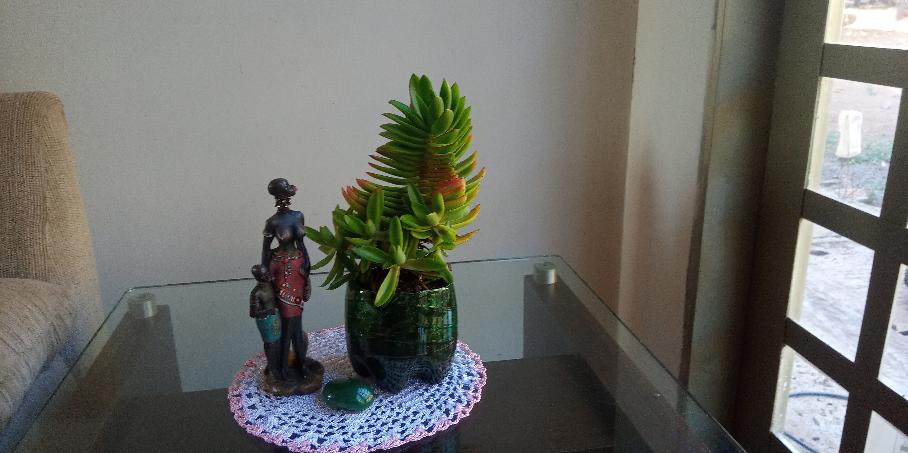
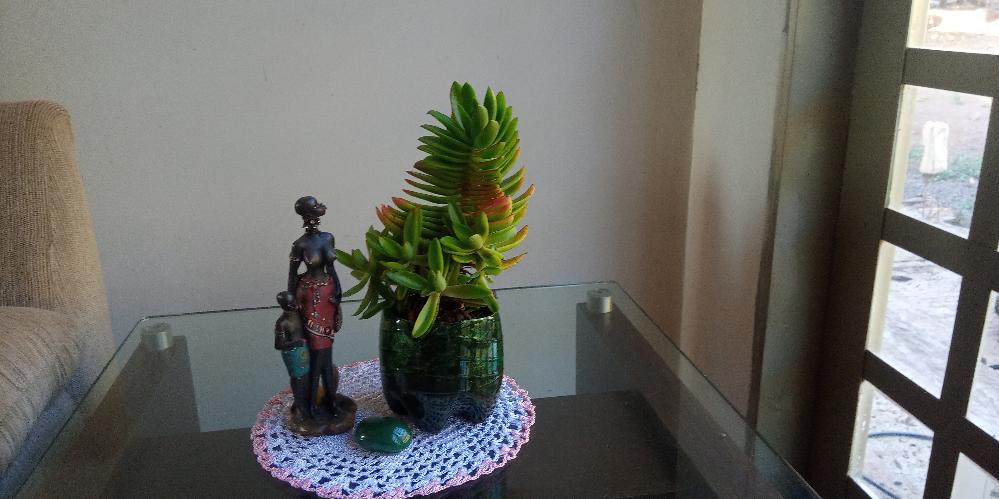

.png)
A sustentabilidade é buscar equilibrar as necessidades humanas com a capacidade do planeta de suprir essas necessidades no futuro.
Não se fala que é nos pequenos frascos que se tem os melhores perfumes, então, as pequenas atitudes podem transformar em grandes mudanças, quando nos unimos em busca de melhorar o mundo onde vivemos.
O mundo de hoje está muito consumista, só se pensa em produzir cada vez mais e com rapidez, sem se preocupar com o descarte dos materiais que não são mais utilizados.
O nosso planeta está virando um grande depósito de lixo a céu aberto, a poluição está para todo lado, rios, oceanos, solos e atmosfera, pensando nisso, podemos ter algumas iniciativas que cooperam para melhorar um pouco mais o meio ambiente, colaborando com o nosso bem-estar e de nosso planeta.
No colégio Geremia Lunardelli, durante a aula de química, aprendemos a fazer sabão com a utilização de óleo usado, além de ser uma economia para o nosso bolso, estamos reaproveitando o óleo que iria ser descartado no solo ou nos rios.
 

Podemos também fazer o reaproveitamento de embalagens plásticos, como garrafas pets, potes de margarina, sorvete, para transformá-los em lindos vasos para planta e flores.

Usando caixinhas de leite, garrafas pets, caixinhas de ovos podemos fazer comedouros para pássaros, além de alegrar nosso ambiente, estamos ajudando a alimentá-los, pois com o desmatamento, muitos estão passando fome.

A utilização de pneus para fazer enfeites no jardim é uma forma de evitar ficarem jogados, juntando água e sendo criadouro do mosquito da dengue ou queimados gerando poluição.
Sabemos que temos que cuidar de nosso planeta, porque ele é nossa casa, de nada adianta procurar outros, se nem do nosso cuidamos.